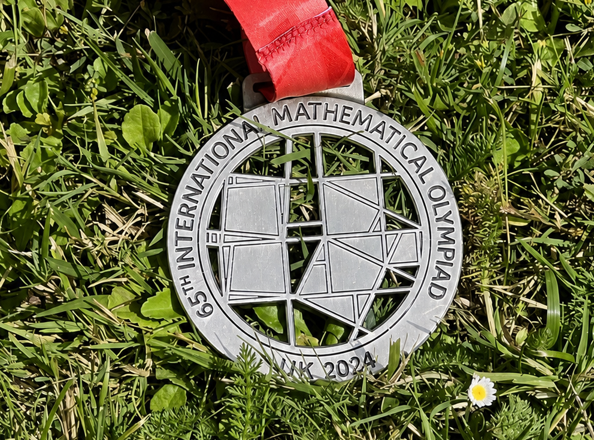
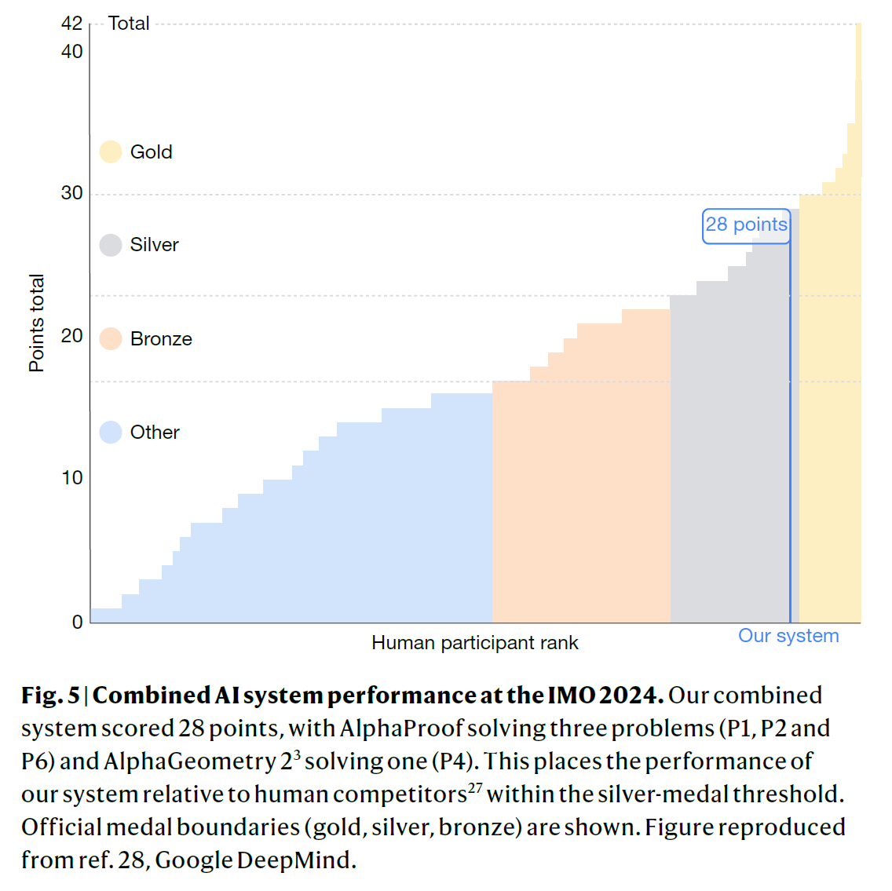
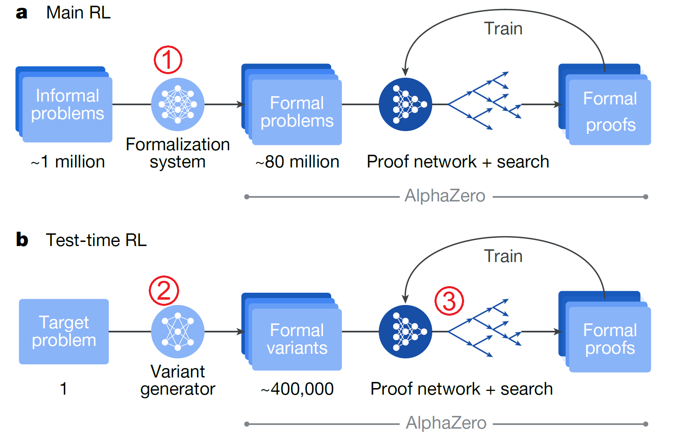
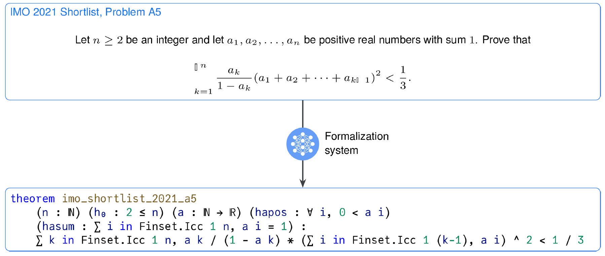

AI research talk
Review of the article: Olympiad-level formal mathematical reasoning with reinforcement learning
Luc Pétiard


What happened in 2025?
Mathematical Olympiad
- 4 hours
- 6 problems
- < 20 years old, no university students
Example (2024, problem 6)
Let $\mathbb{Q}$ be the set of rational numbers. A function $f:\mathbb{Q} \to \mathbb{Q}$ is called $\textit{aquaesulian}$ if the following property holds:
for every $x,y \in \mathbb{Q}$, $$f(x+f(y)) = f(x) + y \ \ \text{ or } \ \ f(f(x)+y) = x+f(y)$$ Show that there exists an integer $c$ such that for any aquaesulian function $f$ there are at most $c$ different rational numbers of the form $f(r)+f(-r)$ for some rational number $r$, and find the smallest possible value of $c$.
Results
Problems 1, 2, 4, and 6 were solved!


Core of AlphaProof


Olympiads 2024 vs 2025
- Contrary to 2024, the 2025 algorithm was mainly done with Gemini (natural language, not Lean)
- No information/article to describe how they did
- Drawback: The proofs do not come with the automatic Lean verification
Implications
What is the best representation space for AI mathematical reasoning? Apparently, it's not Lean, but rather LLM + agents
Other results from 2026
What future do we want?
Leiden Declaration on Artificial Intelligence and Mathematics
Terence Tao: Mathematics in the age of AI